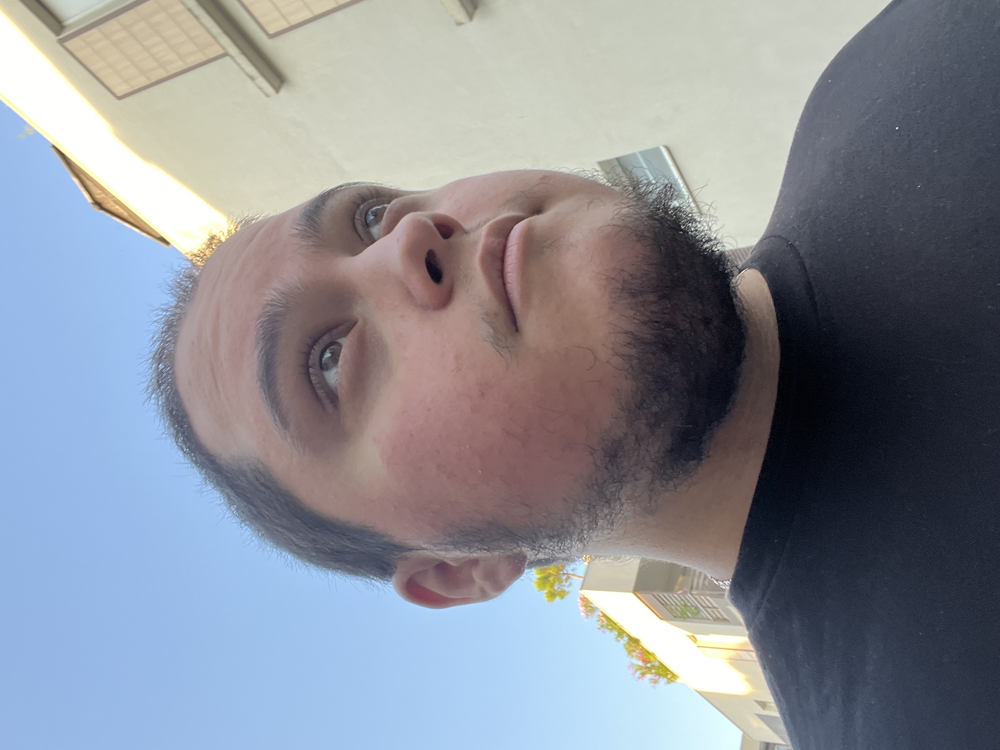
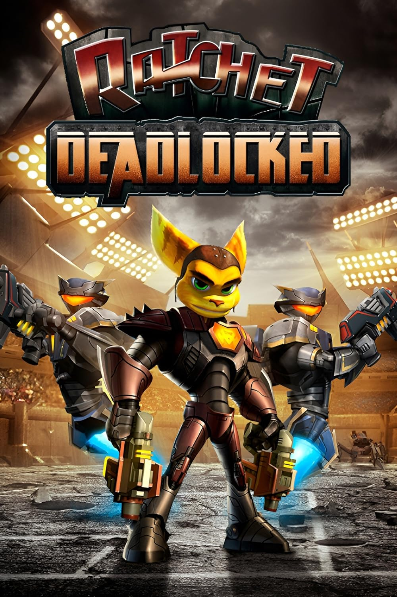

SKENDERI Joel
Apprenant dev web, futur grande star de la pop et grand fan de Gunpla
Mes hobbies et passions
Dans cette première partie je tiens à parler de moi et ce qui m'as donné envie de devenir développeur web
- Depuis que je suis tout petit j'ai eu la chance d'avoir accès à une console de jeux vidéo mes souvenirs les plus clairs commences avec la Playstation 2, je me souvenais que j'avais déjà des jeux avant d'en demander directement à mes parents, ce qui est très étrange car eux ne sont pas fan de ça et ont toujours été assez récalcitrant à l'idée de m'en acheter.
- Mon premier souvenir concret de jeux vidéo étant moi jouant à Ratchet & Clank : Gladiator (connu sous le nom de Deadlocked en Amérique du Nord)

depuis que j'ai commencer à jouer j'ai toujours aimer la science fiction c'est à ce jour toujours mon type de fiction préférée, qu'elle soit un média d'action, de comédie ou d'horreur.
-
kpzegjqiergoiern